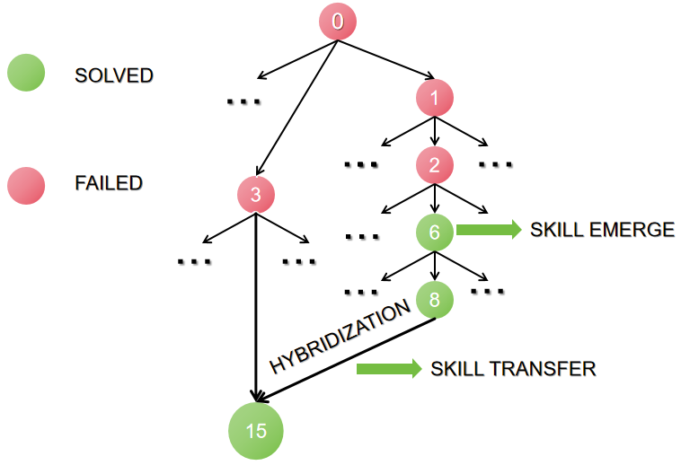

Mendel Gödel Machine: Comparative Evolution for Self-Improving Coding Agents
TL;DR
- "Mendel Gödel Machine: Recursive Self-Improving Coding Agents via Comparative Evolution" (arXiv 2608.07645; Changzhi Liu, Yilun Liu, Sikuan Yan, Volker Tresp, Yunpu Ma — the Tresp/Ma group is at LMU Munich (inferred from the thread — verify in the paper)) changes exactly one thing in the Gödel-machine recipe: what the agent gets to look at before rewriting its own code. Instead of one failed run, it gets a controlled comparison of two runs.
- Under an identical budget (200 evaluations + 24 self-edits, Qwen3.6-35B-A3B backbone, same starting agent), MGM beats the previous best (HGM): SWE-bench Verified-60 68.3% → 78.3% (HGM: 73.3%), Polyglot-60 50.8% → 93.2% (HGM: 77.9%). On the full 225-task Polyglot the evolved agent scores 93.3%, and 96.9% when the frozen agent code is re-run with DeepSeek-V4-Pro.
- The transfer results are the strongest evidence: HGM's agent loses 3.4 points when moved from Polyglot to SWE-bench Pro (16.7 → 13.3); MGM's gains 10.0 (→ 26.7). Removing the cross-agent comparison operator costs the most in ablation (93.2 → 74.6 on Polyglot-60).
Why this matters
Every self-improving coding agent in this tracker's Gödel-machine thread works the same way at the moment of truth: an agent is picked, shown one of its recent failures, and told to edit its own source code so that doesn't happen again. Follow-up work improved everything around that moment — which agent to pick, how to organize the archive, how to spend the budget — while the edit itself stayed a one-failure patch. And one failure is a terrible diagnostic: it can't tell a systematic weakness from a fluke, so the editor hard-codes around the task in front of it — exactly the overfitting this tracker keeps documenting (HarnessCompass, "Rethinking Harness Evolution"). MGM's response is the oldest move in experimental science: never conclude from a single observation — construct a comparison where only one factor varies. And the comparisons are free: the archive already stores every run of every variant; MGM just stops using that history as a mere leaderboard.
The core idea
In plain English first. The Darwin Gödel Machine and its successors improve a coding agent by repeatedly having it rewrite its own source code after examining one of its own failed runs. The Mendel Gödel Machine keeps that entire system and changes only the examining step: before each self-edit, the agent is shown two runs, chosen so that they differ in exactly one respect — the same agent on two different tasks, or two different agents on the same task. The paper calls this comparative evolution: conditioning each self-edit on a controlled comparison instead of a lone failure.
The vocabulary, defined as used. An agent's source code plus scaffolding is its genotype — what evolution edits. Running agent \(a\) on task \(\tau\) produces a trajectory \(\varphi(a,\tau)\) (the full log of what it did) and a binary outcome \(r(a,\tau)\in\{0,1\}\); trajectory-plus-outcome is its phenotype — the observable behavior. The archive is a tree of all agent variants ever created, each storing its code and every recorded phenotype; a lineage is a chain of descendants in that tree.
MGM then splits "rewrite yourself" into three operators, distinguished only by the evidence handed to the editor:
- Clonal mutation (\(\varPhi_{\mathrm{CM}}\)) — the legacy operator: one failed trajectory of the agent being edited. Kept for when no comparison is available yet.
- Reaction-norm mutation (\(\varPhi_{\mathrm{RM}}\)) — a reaction norm is genetics-speak for how one genotype behaves across different environments. Here: the same agent's trajectories on two different tasks (a failed target, plus a reference — preferably also failed). The editor is instructed to find a recurring or contrastive behavioral pattern and fix that, not the instance.
- Cross-lineage hybridization (\(\varPhi_{\mathrm{CH}}\)) — two agents from different lineages compared on the same task, available whenever they share an attempted task not solved by both. Despite the name, no code is spliced: the failing agent is asked to identify the transferable behavior visible in the other agent's trajectory and re-implement it in its own codebase. Controlled inheritance, not crossover — hence Mendel.

Figure 1 from the paper: the archive (left) stores each agent's code and per-task outcomes; the loop alternates evaluation and expansion; the three operators (right) differ only in the comparative evidence handed to the editor.
Crucially, both new operators reuse trajectories the archive has already collected, so MGM spends zero extra evaluations relative to HGM. Same budget, more information per edit.
How it works
The loop in one sentence. At every step MGM does exactly one of two things: evaluate an existing agent on one more task, or expand — pick an agent and let it write an improved copy of itself. Everything else is detail about how those two choices are made.
One expansion, start to finish
The setup, from the paper's own case study (Appendix F.1, Polyglot task javascript__queen-attack). Two lineages matter. One keeps failing that task. The other solved it, because somewhere along the way an ancestor picked up a habit the authors call the test-contract skill: read the test file as a strict behavioral contract — exact public APIs, expected values, error messages — before writing any implementation.
The question this expansion answers: can the failing lineage acquire that habit without anyone copying code?
Step 1 — Evaluate, or expand? The controller checks whether the archive has earned another agent. It may only grow as a sublinear function of the evidence behind it, so the population cannot outrun the evaluations needed to tell agents apart. Here it decides to expand.
Step 2 — Choose which agent will edit itself. Not the best-scoring agent — the one whose branch looks most promising. An agent that scored 1-of-3 itself but whose descendants have gone 20-of-25 is a strong choice, because the evidence its branch is fertile lives in its children. It lands on the struggling lineage.
Step 3 — Choose how it will edit itself. Three operators, and eligibility depends on what evidence exists:
| Operator | Needs | Evidence it produces |
|---|---|---|
| Clonal mutation | one failed run | that single failure |
| Reaction-norm mutation | the same agent evaluated on ≥ 2 tasks, ≥ 1 failed | that agent on two different tasks |
| Cross-lineage hybridization | another agent attempted the same task | two different agents on one task |
All three are eligible here, because the other lineage attempted queen-attack too — and solved it. MGM samples among them (weights 0.10 / 0.45 / 0.45, renormalized over whatever is eligible). Hybridization wins.
Step 4 — Assemble the evidence: exactly two records.
The failing agent's trajectory on queen-attack, and the successful agent's trajectory on the same task. Because exactly one of the two solved it, the failing agent is the one that edits itself and the other is the donor. Two runs, differing in one respect — that controlled pair is the whole idea of the paper.
Step 5 — Make the edit. The failing agent reads both trajectories and is asked a single question: what transferable behavior explains the difference? The answer here is the test-contract skill, which it then re-implements in its own codebase, in its own way. No files are copied — nothing is spliced between lineages, which is what separates this from ordinary crossover.
Step 6 — Attach and verify.
The child joins the failing lineage, passes validation, and in a later evaluation step solves queen-attack. The skill has crossed lineages without any code changing hands.

Figure 8 from the paper: the worked example. The skill emerges at node 6, persists at node 8, and hybridization carries it into a failing lineage's child, node 15.
The machinery behind steps 1–3
Three decisions above were stated plainly; here is what actually governs them.
Step 1, the growth rule. Expansion is allowed only when \(N_t^{\alpha}\ge|\mathcal{V}_t|\), where \(N_t\) counts every evaluation ever run and \(|\mathcal{V}_t|\) the agents in the archive. At \(\alpha=0.5\): 100 evaluations justify 10 agents, 400 justify 20 — quadruple the evidence to double the population. The reported runs pair 200 evaluations with 24 expansions, implying \(\alpha\approx0.6\) (reconstructed: \(200^{0.6}\approx24\); Table 5 lists only \(\beta_{\mathrm{fail}}\), the three \(\lambda\), and \(m_{\mathrm{RM}}\), so \(\alpha\) and \(\kappa\) are inherited from HGM and never restated).
Step 2, two different posteriors for two different decisions. Both use the same formula, applied to different counts. For choosing which agent to evaluate next:
Read it as a belief about one number: what is agent \(a\)'s true success rate? Here \(n_{\mathrm{s}}(a)\) and \(n_{\mathrm{f}}(a)\) are how many tasks that agent has solved and failed; \(\mathrm{Beta}\) is the standard belief distribution over a rate given a win/loss count; the \(1+\) is a uniform prior, so an agent with no record could be anything; \(\pi_a\) is a single random draw from that belief; and \(\kappa\) scales how confident the belief is. Every candidate draws once and the highest draw wins — Thompson sampling.
The width of each belief does the exploring, with no explicit exploration term. An agent evaluated twice with one success has a broad belief, so its draws swing wildly and it keeps getting picked despite a mediocre record — its uncertainty is worth resolving. An agent evaluated forty times with twenty successes has the same 50% rate but a narrow belief, so its draws cluster and it stops soaking up evaluations. \(\kappa\) tilts that balance: below 1 it pretends there is less evidence than there is (wider, more exploration), above 1 it sharpens toward the observed rate. (The paper never states \(\kappa\); like \(\alpha\) it is inherited from HGM unrestated.)
For choosing which agent expands, the identical formula is applied to clade-level counts — successes and failures summed over the agent's entire subtree rather than the agent alone. That one substitution is what makes a 1-of-3 agent whose descendants have gone 20-of-25 an attractive parent: its own record is weak, but the evidence that its branch is fertile lives in its children. Conversely a node that scored well once but whose branch has stalled stops drawing edits.
Step 3, what the operator weights imply. \(\lambda_{\mathrm{CM}}=0.10\) means the legacy single-failure operator is retained, not replaced — roughly one edit in ten still sees only one run, and early on, when nothing else is eligible, it fires with probability 1. Comparative evolution is the modal edit, not the exclusive one.
Why a pair should beat a single failure
Two equations are worth carrying. The first is just the evidence set, and its shape is the point:
The editor's entire diagnostic input is two (trajectory, outcome) pairs — a target task and a reference task. Nothing archive-wide; one controlled pair. Hybridization has the identical shape, with the second record coming from a different agent on the same task.
The second explains why that helps. Model the agent as a string of hidden components, of which set \(M(a)\) is defective; a task fails when it touches a defect. From evidence \(E\) the editor forms a suspect set \(C_{\sigma}(E)\) and successfully repairs a genuinely defective component with probability \(s\):
In words: the chance an edit fixes something real is (chance the editor points at a genuinely broken part) × (chance the rewrite succeeds). Comparison raises the first factor and leaves the second alone — two failures intersect the suspect list, and a success-versus-failure contrast filters it. The paper calls this diagnostic compression. Monte Carlo sweeps over initial defect counts \(d_0\in\{10,20,40,80\}\) and the advantage ratio \(\rho=p_f^{\mathrm{RM}}/p_f^{\mathrm{CM}}\) show MGM dominating DGM/HGM-style baselines whenever \(\rho>1\), and collapsing to HGM behaviour at \(\rho=1\).
One designed mechanism that is switched off
Hybridization needs two lineages to have attempted the same task, which will not happen often by accident. The paper's answer is a global failure pool: every failed task is remembered, and when the loop picks a task for any agent, pool tasks get sampling weight \(\beta_{\mathrm{fail}}\) against 1 for everything else — deliberately steering lineages onto the same hard tasks, at no extra budget.
In the released configuration this is disabled. Table 5 sets \(\beta_{\mathrm{fail}}=1.0\), so pool and fresh tasks are weighted identically. Every hybridization in the reported runs therefore found its shared task by chance, which makes the operator's measured contribution a lower bound — and leaves the pool an untested knob rather than a working part.
# MGM loop (Algorithm 1), annotated with the worked example
archive A <- {a0 evaluated on benchmark}; failure pool P <- {}
for t = 1..T: # real runs: 200 evals + 24 expansions
if N_t^alpha >= |A|: # EXPAND (self-edit)
anchor <- ThompsonSample(clade posteriors) # the struggling lineage
Omega <- eligible operators for anchor # CM / RM / CH availability
sigma <- sample(Omega; 0.10, 0.45, 0.45) # -> hybridization
E <- two records: # anchor's failure on queen-attack
CM: one failed run | RM: two own tasks # + the donor's success on it
CH: two agents, one shared task
target <- failing agent if one solved it # child joins the failing lineage
child <- target edits own code given E # re-implement the trait; no splicing
if valid(child): A <- A + {child} # -> node #15
else: # EVALUATE
a <- ThompsonSample(node posteriors)
tau <- unattempted task, pool tasks weighted by beta_fail
run a on tau; record (trajectory, outcome) in A
if failed: P <- P + {tau} # would keep lineages colliding (see above)
return best-belief agent # utility backed by enough evaluations
Final selection is sanity-checked rather than greedy: on Polyglot the raw utility-1.0 nodes had only 15 and 4 evaluations, so the reported agent is node #16 — utility 0.91 over 35 evaluations.
Results
- Matched budget, same seed, same backbone (Qwen3.6-35B-A3B, 200 evaluations + 24 expansions): SWE-bench Verified-60 78.3% vs HGM 73.3% (seed 68.3%); Polyglot-60 93.2% vs 77.9% (seed 50.8%). Average relative improvement +44.0% vs HGM's +26.8%. Wall-clock is comparable (Polyglot 40.1h vs 44.2h; SWE-bench 96.1h vs 93.0h on 8×H100) and per-operator token costs are the same order — the gap is not extra compute.
- Full Polyglot-225: 210/225 (93.3%), even across all six languages (33/34 Python, 25/26 C++) — surpassing GPT-5 with ~117× fewer parameters. Freezing the scaffold and swapping in DeepSeek-V4-Pro yields 96.9%.
- Cross-benchmark transfer (evolve on Polyglot-60, evaluate zero-shot): SWE-bench Pro 16.7 → 26.7 while HGM regresses to 13.3; SWE-bench Multilingual 41.7 → 55.0 vs HGM's 43.3.
- Cross-model transfer (evolve on SWE-bench with Qwen, swap backbone): DeepSeek-V4-Flash 50.0 → 66.7 (HGM 60.0); DeepSeek-V4-Pro 45.0 → 75.0 (HGM 70.0); transferred average 70.8 vs 65.0 vs seed 47.5.
- Ablation (Polyglot-60, same budget): full 93.2; without reaction-norm mutation 79.7; without hybridization 74.6 — the cross-lineage channel matters most, consistent with it being the only way lineages share discoveries.
- Backbone choice is about reasoning, not coding (Appendix F.2): with the larger, coding-specialized Qwen3-Coder-Next-80B-A3B, evolution lands far lower (33.3 → 41.7) than with the smaller but stronger-reasoning Qwen3.6-35B — diagnosing why a scaffold failed is a reasoning task, not a code-completion task. Read the fine print: the sentence drawing that comparison says MGM "reaches 61.7% on SWE-bench Verified-60" with Qwen3.6-35B, where Table 1 reports 78.3% for the same setting. One number is wrong and the paper never reconciles them, so the headline +5.0pp margin over HGM could instead be −11.6pp.
- Skill generality (Appendix F.3): a semantic map of evolved changes shows MGM's edits clustering around one reusable workflow (extract the test/API contract → implement against it → verify exact agreement), where HGM's scatter across fragmented interventions.
How it connects
- Darwin Gödel Machine — the foundational reference for this whole thread: DGM introduced the open-ended archive of self-modifying agent variants that everything here presupposes. The lineage is direct: DGM built the archive, Huxley GM (Wang et al., arXiv 2510.21614) made archive sampling smart (clade-level Thompson sampling, inherited verbatim by MGM), and MGM is the first to upgrade the edit itself. Read the DGM tutorial first if the archive/self-edit loop is unfamiliar.
- Hyperagents — the other "change what the editor sees" paper: it adds metacognitive machinery atop the DGM loop, whereas MGM keeps the machinery fixed and upgrades only the evidence. The two are compatible, and both bet that the self-modification step — not the search — is the binding constraint.
- AIDE² / RSI evidence — Weco's level-1 RSI claim rests on nested improvement loops working at all; MGM supplies the cleanest controlled evidence that how the inner step is informed changes outcomes at matched budget.
- Survey: Self-Improvement in Modern Agentic Systems — the survey flags overfitting-to-search-distribution as the field's open wound; MGM's transfer table (HGM negative on SWE-bench Pro, MGM +10.0) is the sharpest datapoint yet that evidence quality, not search intensity, is the bottleneck.
- Meta-Harness — the opposite philosophy of the same idea: MGM curates a minimal two-trajectory comparison per edit; Meta-Harness dumps all prior code, scores, and raw traces on a filesystem and lets the editing agent choose what to read. Curated-pairs vs everything-on-disk is the live design question for evidence-conditioned self-modification.
Critical take
The headline numbers are search-set numbers: evolution and the reported 78.3/93.2 use the same 60-task subsets, so they measure how well the archive optimized its own benchmark; the honest evidence is the transfer tables, where margins are healthy but smaller. Reporting is single-run — compute "constrains the number of independent evolution seeds" — so the deltas carry no error bars, and the only CIs live in the surrogate simulation, where the comparative advantage \(\rho\) is assumed, not measured; whether trajectory pairs actually compress diagnosis for an LLM editor is exactly the empirical question. "Comparative evolution" is also more modest than "rich comparative signals in the expanding archive" suggests: every evidence set is one pair of trajectories, never archive-wide statistics, and \(\lambda_{\mathrm{CM}}=0.10\) keeps the old single-trajectory operator in the mix. Two facts noted above compound the uncertainty: the released \(\beta_{\mathrm{fail}}=1.0\) neutralises the failure pool sold as the engine of cross-lineage overlap, and Appendix F.2's 61.7% contradicts Table 1's 78.3%. Evolution uses one backbone, and both transfer targets run in the easy weaker-to-stronger direction. And the experiment "Rethinking Harness Evolution" would demand — does comparative evidence beat spending the same tokens on more single-trajectory attempts? — is only partly answered, since expansions are matched in count, not in what a differently-allocated budget could buy. None of this undercuts the core result: same budget, same seed, two-trajectory evidence beats one-trajectory evidence, and the lineage-crossing channel hurts most to remove.
If you remember three things
- Upgrade the edit, not the search: MGM keeps HGM's archive and Thompson sampling untouched and only enriches the evidence per self-edit — same-agent-across-tasks and cross-lineage-same-task pairs — turning +5.0pp into +10.0pp on SWE-bench Verified-60 and +27.1pp into +42.4pp on Polyglot-60 under identical budgets, with zero extra evaluations.
- Comparison is diagnostic compression: \(p_f^{\sigma}=s\cdot\Pr[\text{suspect is truly defective}]\) — two failures intersect the suspect list, a success/failure contrast filters it; the editor doesn't get smarter, its target list gets cleaner.
- Transfer separates the methods: single-trajectory HGM loses 3.4pp moving to SWE-bench Pro; MGM gains 10.0pp, averages 70.8% across swapped backbones, and its evolved skills cluster into one reusable contract-extraction workflow — evidence of general engineering rather than benchmark memorization.